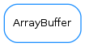

ArrayBuffer¶

-
class
ArrayBuffer(buffer, maxSize=0)[source]¶ Bases:
objectA data buffer which internally uses a preallocated numpy.array. An ArrayBuffer will only present the actual contents, not the full internal buffer, so when appending or extending, it behaves as if dynamic reallocation was taking place.
The contents of the class:ArrayBuffer can be accessed as if it was a numpy array (i.e slicing notation like b[2:3], b[:,2], b[-1],... are all valid).
For retrieving the full contents, see
ArrayBuffer.contents()andArrayBuffer.toArray()On creation, a given initial internal buffer and a maximum size are set. If the maximum size is larger than the original internal buffer, this will be automatically grown in geometrical steps if needed to accommodate the contents, up to the maximum size. Once the contents fill the maximum size, appending or extending the contents will result in older contents being discarded (in a FIFO way)
The
append()and meth:extend methods are designed to be cheap (especially if the internal buffer size is already at the maximum size), at the expense of memory usage-
append(x)[source]¶ similar to the append method in a list, except that once the maximum buffer size is reached, elements get discarded on the begginning to keep the size within the limit
Parameters: x ( scalar) – element to be appendedSee also
-
bufferSize()[source]¶ Returns the current size of the internal buffer
Return type: intReturns: lcurrent length of the internal buffer See also
-
contents()[source]¶ returns the array of the contents that have already been filled. Note that it does not return the full buffer, only those elements that have been already set.
It is equivalent to b[:]
Return type: arrayReturns: array of contents See also
-
contentsSize()[source]¶ Equivalent to len(b)
Return type: intReturns: length of the current contents of the ArrayBuffer (not the maximum size of the buffer) See also
-
extend(a)[source]¶ similar to the extend method of a list, except that once the maximum buffer size is reached, elements get discarded on the begginning to keep the size within the limit
Parameters: a ( array) – array of elements to appendSee also
-
extendLeft(a)[source]¶ Prepends data to the current contents. Note that, contrary to the extent method, no data will be discarded if the maximum size limit is reached. Instead, an exception will be raised.
Parameters: a ( array) – array of elements to appendSee also
-
isFull()[source]¶ Whether the contents fill the whole of the internal buffer
Return type: boolReturns: True if the contents fill the maximum size. False otherwise. See also
-
maxSize()[source]¶ Returns the maximum size of the internal buffer, beyond which the ArrayBuffer starts discarding elements when appending
Return type: intReturns: maximum length of the internal buffer See also
-
moveLeft(n)[source]¶ discards n elements from the begginning to make space at the end of the buffer. Moves all elements n positions to the left and the contents size gets decreased by n
Note: if n is larger or equal than the maximum buffer size, the whole buffer is wiped
Parameters: n ( int) –
-
remainingSize()[source]¶ returns the remaining free space in the internal buffer (e.g., 0 if it is full)
Return type: intReturns: length of the unused space in the internal buffer See also
-
setMaxSize(maxSize)[source]¶ Sets the maximum size of the internal buffer, beyond which the ArrayBuffer starts discarding elements when appending
Parameters: maxSize ( int) – maximum length of the internal bufferSee also
-